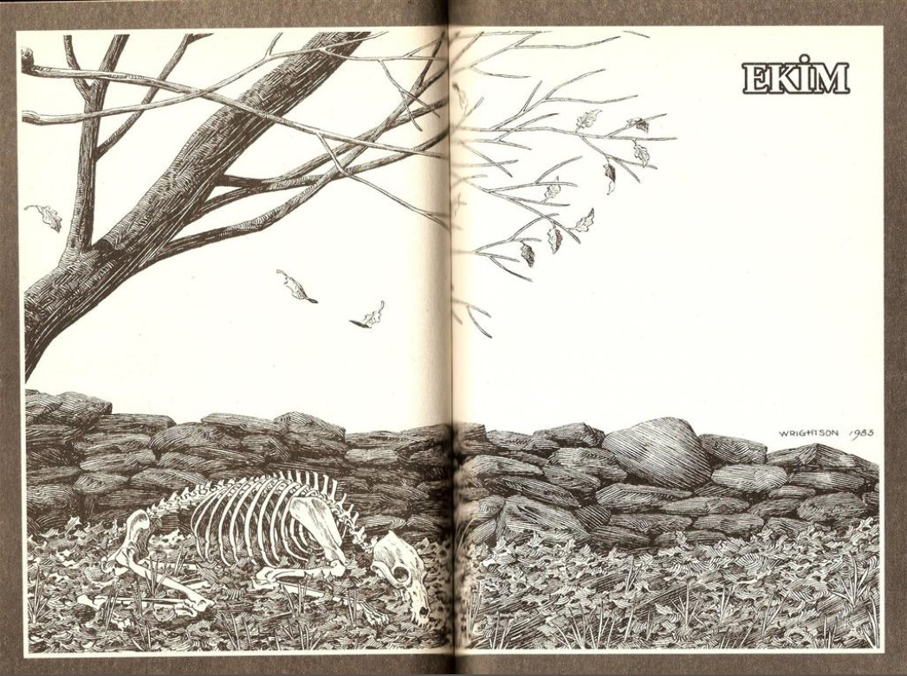
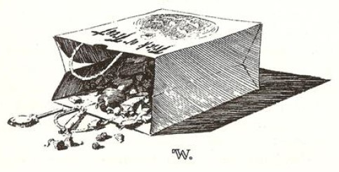
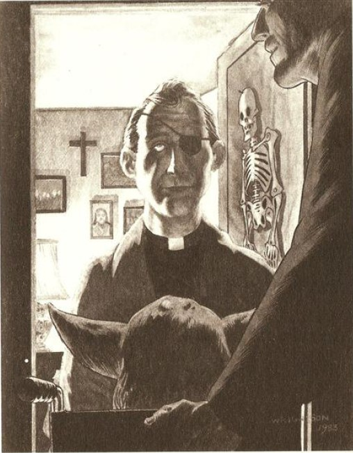

CADILAR BAYRAMI GECESİNDE, Marty Coslaw, tekerlekli sandalyesinin aküsü tamamen tükenmiş olarak Şeker ya da Şaka gezisinin ardından eve döndüğünde, dosdoğru yatağına gitti; yarım ay, elmas taneciklerine benzeyen yıldızlarla süslenmiş soğuk gökyüzünde yükselene dek orada uyanık olarak öylece yatacaktı. Dışarıda, bir dizi Dört Temmuz torpilinin hayatını kurtardığı verandada, titretici bir rüzgâr sararmış yaprakları ve iri, yassı döşeme taşlarının üzerindeki şişe kapaklarını girdap gibi döndürüyordu. Yaşlı kemikler gibi tıkırdıyorlardı. Ekim dolunayı Tarker's Mills'e yeni bir cinayet getirmeden geçip gitmişti, peş peşe iki aydır böyle oluyordu. Kasaba sakinlerinin bazıları - berber Stan Pelky ve kasabanın tek otomobil alım satım dükkânı olan Blodwin Chevrolet'nin sahibi Cal Blodwin gibi - dehşetin geride kaldığına inanıyorlardı, katilin bir serseri ya da ormanda yaşayan başıboş biri olduğuna ve artık tam tahmin ettikleri gibi, başka bir yerlere gittiğine inanıyorlardı. Ama diğerleri bundan o kadar da emin değildi. Bunlar, Elmer Zinneman'ın Eylül dolunayında öldürülen on bir domuzunun üzerine, Ekim dolunayının bir gün sonrasında, paralı yolun yakınlarında katledilmiş olarak bulunan dört geyiğin üzerine kafa yoranlardı. Uzun sonbahar gecelerinde, barda içilen biralarla birlikte tartışmalar iyice şiddetleniyordu.
Ama Marty Coslaw biliyor.
Bu gece babasıyla şeker ya da şaka gezmesine çıkmıştı (babası Cadılar Bayramı'nı severdi, insanı adeta kamçılayan soğuğu sevdiği gibi, kapılar açılıp Tarker's Mills'in tanıdık yüzleriyle karşılaştıkları zaman o içten Koca Ahbap sesiyle kahkahalar atmayı, "Hey, hey!" ya da "Ding-dang-dong!" gibi ahmakça şeyler söylemeyi de severdi). Marty başına geçirdiği büyük plastik Don Post maskesi ve sakat bacaklarım örten kocaman bir cüppeyle Yoda kılığına girmişti. "Sen her zaman her istediğini alırsın," demişti Kate, maskeyi gördüğünde başını arkaya doğru atarak . . . ama kızın kendisine gerçekten kızgın olmadığını biliyordu (ve sanki bunu doğrulamak istermişçesine, kız onun kostümünü tamamlamak için ustaca eğriltilmiş bir Yoda değneği yapmıştı); ama herhalde şeker ya da şaka için artık fazla büyük sayıldığına üzülüyordu. Onun yerine, kendinden büyük, liseli arkadaşlarıyla bir partiye gidecekti. Donna Summer plakları dinleyip dans edecek, bir ipten sarkan elmayı elleri arkadan bağlı iki kişinin yemeğe çalıştığı elmayı kap oyununu oynayacak, ardından ışıklar söndürülüp bir şişe çevrilecek ve belki de bir oğlanı istediği için değil, ama ertesi gün derste kızlarla birlikte bu konuda konuşup kıkırdaşmak eğlenceli olacağı için öpecekti.
Marty'nin babası oğlunu kamyonete bindirmişti, çünkü kamyonette onu rahatça indirip bindirmek için yapılmış bir rampa vardı. Marty, bu rampadan aşağı inip tekerlekli sandalyesinin üzerinde, babasıyla birlikte caddeleri vızıldayarak turlamıştı. Şeker torbasını kucağında taşıyordu, yolları üzerindeki tüm evlere ve şehir merkezindeki birkaç eve uğradılar: Collins'lere, Maclnne'lere, Manchester'lara, Miliken'lere, Easton'lara. Kasabanın barında şekerli mısırla dolu bir kavanoz vardı. Kongregasyonal Kilisesi'nin papaz odasında Snicker çikolataları ve Baptist Kilisesi'nin papaz odasındaysa Chunky çikolataları vardı. Ardından Randolph'lar, Quinn'ler, Dixon'lar ve bir ya da iki düzine daha ev ziyaret edilmişti. Marty eve dolup taşan bir şeker torbasıyla ... ve bir parça da korkunç, neredeyse inanılmaz bir bilgiyle dönmüştü.
Biliyordu.
Kurtadamın kim olduğunu biliyordu.
Marty'nin turunun bir noktasında, iki dolunay cinneti arasındaki sakinlik dönemini güven içinde yaşayan Canavarın ta kendisi, Don Post Yoda maskesinin altında yüzünün nasıl da solduğunu ya da eldivenlerinin içindeki parmaklarının Yoda değneğini tırnakları beyazlaşana kadar nasıl da sıktığını fark etmeden torbasına şeker atmıştı. Kurtadam Marty'e gülümsemiş ve onun plastik kafasına hafif hafif vurmuştu.
Ama o kurtadamdı. Marty'nin böyle düşünmesinin tek nedeni adamın bir göz bandı takıyor olması değildi. Başka bir şey daha vardı - yaklaşık dört ay önceki o gümüş renkli yaz gecesinde gördüğü hayvanın hırlayan yüzüyle bu adamın yüzü arasında esaslı bir benzerlik vardı.
İşçi Günü'nün7 ertesi günü, Vermont'tan Tarker's Mills'e dönüşünden bu yana Marty hep çevresini izlemişti, eninde sonunda kurtadamı göreceğine, gördüğü zaman da onu tanıyacağına da emindi, çünkü kurtadam tek gözlü biri olacaktı. Kurtadamın gözlerinden birini çıkardığına oldukça emin olduğunu söylediği zaman polislerin başlarını sallayarak buna dikkat edeceklerini söylemelerine rağmen, onların kendisine gerçekten inanmadıklarını anlayabilmişti. Belki sadece bir çocuk olduğu, belki de yüzleşmenin gerçekleştiği o Temmuz gecesi orada bulunmadıkları içindi. İki şekilde de fark etmezdi. Gördüğünün kurtadam olduğunu biliyordu.
(7.- İşçi Günü: Labor Day: Amerika Birleşik Devletleri'nde, Eylül'ün ilk pazartesi gününe rastlayan işçi günü ya da bayramı, çn.)
Tarker's Mills, küçük bir kasabaydı ama dağınık bir yerleşime sahipti. Marty bu geceye kadar etrafta tek gözlü bir adam görmemiş ve çevresine çeşitli sorular sormaya cesaret edememişti; çünkü annesi zaten Temmuz'da başına gelen olayın oğlunun üzerinde sürekli bir damga vurmuş olabileceğinden korkuyordu. Eğer annesiyle dedektifçilik oynamaya kalkarsa, kadının er ya da geç bu korkuya yeniden kapılmasından çekiniyordu. Ayrıca - Tarker's Mills küçük bir kasabaydı. Eninde sonunda Canavar'ı insan yüzüyle görecekti.
Eve dönüşlerinin ardından Bay Coslaw (geçmişte ve şu an binlerce öğrencinin Koç Coslaw'ı) akşamın getirdiği heyecanın Marty'i yorduğunu ve oğlunun bu yüzden böylesine sessiz olduğunu düşünmekteydi. Ama gerçekte durum böyle değildi. Marty, kendisini - o harika havai fişek gecesi dışında - hiç bu kadar uyanık ve canlı hissetmemişti. Çocuğun asıl düşündüğü şuydu: eve dönüşünün ardından kurtadamın kim olduğunu öğrenmek yaklaşık altmış gününü almıştı, çünkü Marty bir Katolikti ve kasabanın eteklerinde St. Mary Okulu'na gidiyordu.
Göz bandı takan adam, torbasına bir Chunky atıp gülümseyen ve plastik maskesinin üzerine hafif hafif vuran adam bir Katolik değildi. Canavar, Grace Baptist Kilisesi'nin rahibi Lester Lowe'du.
Başını kapıdan dışarıya uzatıp gülümserken Marty, kapıdan sızan lamba ışığının altında göz bandını net bir biçimde görmüştü. Göz bandı, fare gibi ufak tefek bir adam olan rahibe neredeyse korsansı bir görüntü kazandırmıştı.
"Gözünüz için çok üzüldüm," diye Koca Ahbap sesiyle gürledi Bay Coslaw. "Umarım ciddi bir şey değildir."
Rahip Lowe'un gülümseyişi sabır dolu bir şekilde uzadı. Aslında, diye konuştu, gözünü kaybetmişti. Başındaki iyi huylu bir tümöre ulaşmak için gözünü almak zorunda kalmışlardı. Ama bu Tanrı'nın isteğiydi ve kendisi de bu duruma ayak uydurabilirdi. Marty'nin kafasını tamamen kaplayan maskeye bir kez daha hafifçe vurmuş ve tanıdığı başka insanların katlandığı daha ağır dertler olduğunu söylemişti.
Ve işte şimdi Marty, yatağında uzanmış yatarken Ekim rüzgârının dışarıda şarkı söyleyişini, mevsimin son yapraklarını hışırdatışını, araba yolunun yan tarafında duran oyulmuş balkabakların göz çukurlarından geçip bir baykuş gibi ötüşünü dinliyordu. Yıldızlarla süslenmiş gökyüzünde, yarım ayı seyrediyordu. Aklındaki soruysa şuydu: Şimdi ne yapacaktı?
Bilmiyor, ama zaman içinde yanıtın geleceğine emin olduğunu hissediyordu.
Dışarıda, rüzgârdan bir ırmak, Ekim'i silip kayan yıldızlarla dolu soğuk Kasım'ı, sonbaharın demir ayını getirerek Tarker's Mills'in üzerinden akıp geçerken çocuk gencecik insanların derin ve rüyasız uykusunu uyuyordu.

